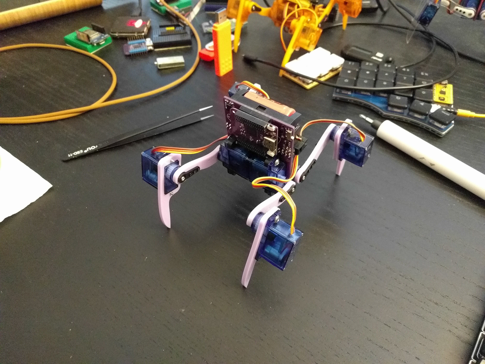
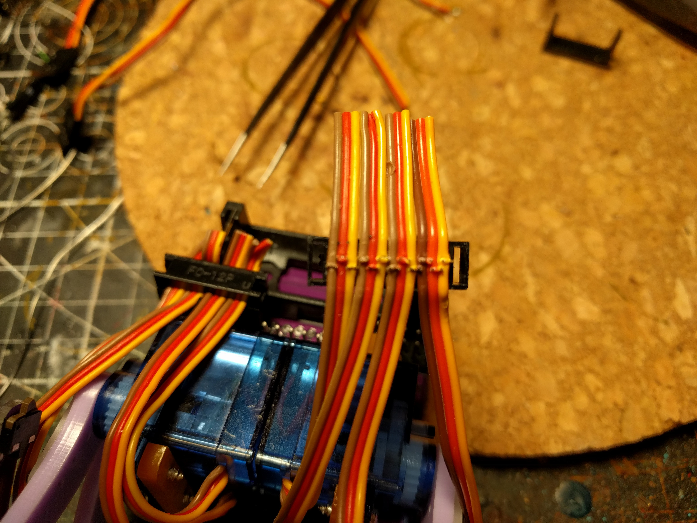
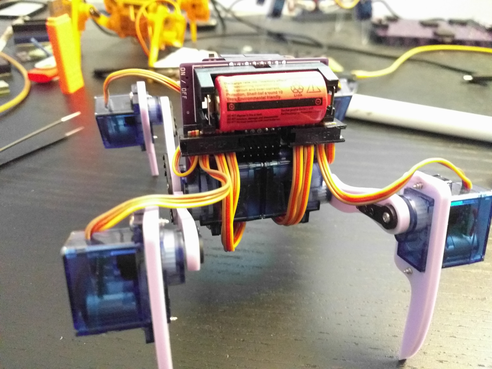

Assembled and Programmed¶
Published on 2021-11-07 in Fluffbug.
Over the weekend I finally had time to finish assembling the robot, and to program the S2 Mini for it. No, I still didn’t implement a gait — just the IK code I had before.
Surprisingly, there were no problems with the PCB — other than the lack of room between the battery and the servo sockets that I mentioned previously. I even got to test the battery protection circuit, because unfortunately those servo sockets make it very easy to short-circuit the cables:
See, the right-most servo cable, that got a bit skewed, and the contacts shorted all the wires together.
Extra care needs to be taken to align the cables straight when doing this.
